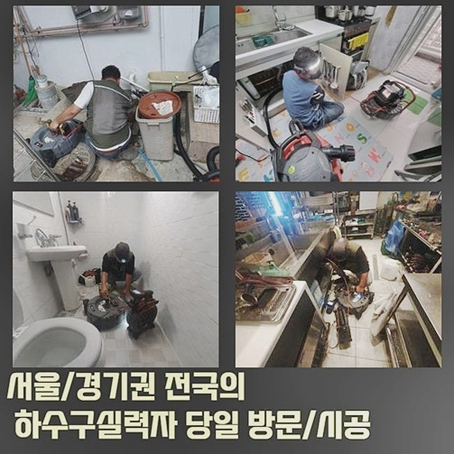
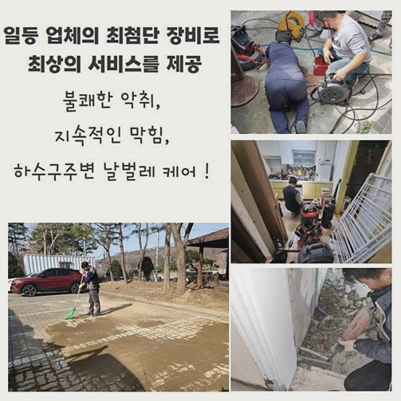
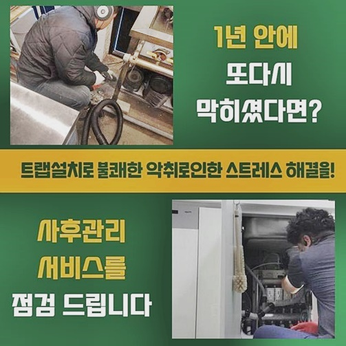
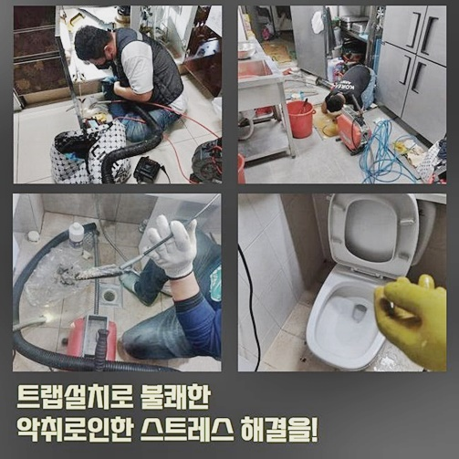
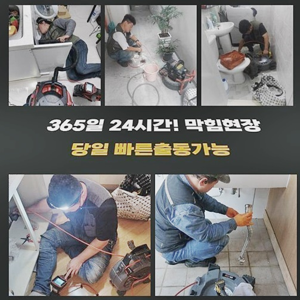

🏠 안산 중앙동오수관역류 대부동 배수구뚫기 물샘전문업체
안산 중앙동 하수구막힘 전문 시공 후기

📋 작업 개요
- 위치: 안산 중앙동, 중앙동, 안산
- 서비스 유형: 하수구막힘, 배관막힘, 누수수리, 역류해결, 뚫는업체, 배관청소, 고압세척
- 작업 일시: 2024. 9. 7. 14:49
- 업체명: 하수구수사대 (010-5615-2118)
🔍 문제 상황
안산 중앙동오수관역류 대부동 배수구뚫기 물샘전문업체
수도를 다량 배출시키는 식당이라면 때때로 통수오류를 경험하시죠
운영 시 식재료를 쓰면서 잔해가 배수관으로 흐르고 이런 특성으로 인하여 배수관이 막히게되고 효과가 있을법한 도구들을 써본 후에 문제들이 완화되기도 하겠지만 재차 문제가 생길거에요
난다긴다하는 배관 해결사들에게 문의하더라도 주방의 일들을 중단해야하는 상황이 발생되니 미루기만 반복하죠
전문적이지 못한 방식으로 단기간동안 증상이 완화되어도 같은 문제들이 생길테니 이를 막기위하여 전문적인 방법으로 손쉽게 수리해주는게 좋아요
금일엔 조리공간에서는 수돗물이 배출되지 않아서 주방의 일들을 포기해버린 상황이라 황급히 전화를 하셨습니다
서둘러 내방드려서 문제양상을 인지하기에 이르렀습니다
역류증세도 나타나게되어 배수장애와 더불어 오염물도 나왔던 현장이었습니다
하수도에 고착현상이 불거졌다는 의미라고 볼 수 있죠 어디쪽에서 문제를 일으키는지 체크해봐야 증상을 완화시킬 수 있는데요
배수구로 내시경장치를 이용해서 무슨 구조들로 구성되어 있는것인지 어디에 막히는 양상이 대두되는지 살피기로 했죠
케이블이 얇기에 내측에 슬러지들이 축적된 가는 관로에있어서 무리없이 이용가능합니다 배수관 내부엔 수직배관도 목격할 수 있었어요
꺾여있어도 스무스하게 휘기때문에 직각으로 L자형 배수관도 면밀하게 확인가능해요

🔎 원인 분석
💡 전문가 진단: 정밀 진단 장비를 사용하여 슬러지의 고착 여부를 판명하고 타격/세척 작업을 실시했습니다.
식당서 사용하고 있던 배수관이라 입구에서 기름들과 오염물의 뭉텅이로 얼룩진 상태였는데요
깊은곳까지 살펴보았더니 고압수청소가 필요했죠
고객님이 문의들을 주로 하시는 사항인 고수압 청소방법은 저희업체가 신속히서 방문드려 배수구의 점검단계를 거쳐서 설명하니 무턱대고 해당 방식을 실시하는 부분들은 걱정하지 않으셔도 된다 말씀드립니다
메인설비도 문제가 심각한것이 확실했기에 탐지도구를 써본 후에 어느 배수구들이 잘못된것인지 살폈습니다
배수관으로 내시경을 사용해 탐지기기를 작동해줘요
이 기계를 운용하여 이물이 가득한 위치를 인지하게 됩니다
일정수준 리치가 길지라도 밀어넣은 라인으로 거리감을 유추해보았는데요
허나 집수시설까지는 더욱 복잡하기에 탐지도구를 써서 알맞은 위치들을 특정합니다
해당 위치들을 관찰하였더니 외측에서 심층부까지 문제들이 뻗은걸 인지했는데요
지금까지 하수 시스템 오류가 생겨나며 증상을 불거지게한 기조는 외부 배수구들이 제 기능을 못해서였는데요
기름뭉치가 진흙과같이 배출되었어요
기름들을 많이 이용하던 식당이기에 거주지와는 비교되지 못할만큼 상당량의 기름뭉치를 체크해보았습니다
지속적으로 식재료를 다루고 그릇들을 세척하면 배수구로 이런저런 잔해가 흘러가는 현상은 당연하다고 볼 수 있어요

🔧 작업 과정
증세가 발생되었을 때 예방적 대책을 세운다면 오래도록 이용가능하겠습니다
배수과정이 시원히 흐르지않을 시엔 지속적으로 관리함이 최선이에요
또한 기름성분을 많이 이용되는 식당이라면 가열점의 온수들을 배수관으로 쏟아내어 다양한 식자재를 청소하고자하나 권장하는 방식이라고 보기 힘듭니다
곧장 배수구의 기름때들을 제거하여주고 내부부터 차근히 세척을 진행시켰어요
해당 단계에선 샤프트장비로 배수구로 선을 삽입해 노커가 회전하며 고착화된 이물을 빨리 제거시키는데요
흡착된 잔해는 체인들에 뒤엉키게되어 배출되게됩니다 고압수를 이겨낼 수 없을만큼 노후된 배관일 시 샤프트장비로 이에 준하는 효과를 자아낼 수 있는데요
안에와 더불어 외측에서도 막히는 양상이 야기된 상황으로 동시다발적인 작업들이 수반되어야 했어요
외측에서 내부까지 샤프트장비 사용을 진행해준다면 흡착오수가 순서대로 사라지며 물길이 열리게 되요
하수관으로 잔해물이 상당했던 탓에 작업 시 샤프트장비 사슬로 다양한 식자재를 제거시켰어요
여태 배수구를 이용해주면서 냄새들이 심하다고 하셨는데요 이물제거가 완료된다면 냄새들이 야기되는 상황들은 없죠
외부 하수구로는 사이즈도 사이즈고 꾸준히 작업한 적이 없어서 단단해진 잔해가 누적된 상황이였어요
배수관으로 망으로 이물들을 걸러내면서 세척을 해주었는데요
슬러지가 없어지면서 배수과정이 원활하니 이후엔 작업이 훨씬 조속히 이뤄졌습니다 집수라인은 전형적으로 배관으로부터 흐르게된 오수가 이곳에 집수되어 배출되요
배수구로 구간 중 한 곳이 막혀버리면 타 부위도 갑자기 증상이 발발해요
지속적으로 샤프트장치와 내시경장비를 삽입하여 검수와 작업합니다
내시경장치를 통해서 내측을 주시해주면서 또 다른 이상이 있는지 체크하기 수월하답니다
배수구로부터 바깥으로 어이진 배수관을 뚫기위하여 탐지기장비를 통해서 꼼꼼하게 조사하여 청소를 이행했어요
꼼꼼한 점검 덕에 잔해물들을 제거해주어 손쉽게 기름때들을 제거했습니다
하수도로 집수시설까지 뻗어진 양상이 길이들이 길어 끝에서부터 장비사용을 하여 접촉부까지 작업들을 속행했죠
내부라인에도 잔해가 있는지 내시경장치로 체크했습니다 내시경으로 검수를 거치니 처음과 다르게 배수 통로가 확 트인 배관을 확인했습니다


✅ 작업 완료
최종적으로 배수구로 오수들이 흐르게되는지 확인합니다
배수검열을 진행하니 배수구로 시원히 배출되었습니다 주방의 배수구로는 이런저런 잔해가나 식자재로 인하여 배수관이 막히게 됩니다
배수관으로 원인을 확실하게 바로 잡고 거름망부품을 신경써주시고 사용 시 하수들을 배출해줄때도 신경써주심이 좋습니다
또한 주기적으로 관리에 신경써주시면 배수로가 제 기능을 하면서 쓰실 수 있어요
하수구로 증상이 나타났다면 시간에 관계없이 의뢰를 맡겨보세요!



⚠️ 베란다 누수 및 방수 관리 방법
- ✅ 비가 많이 올 때 창틀 주변이나 아래층 천장에 얼룩이 생기는지 정기적으로 확인해 보세요.
- ✅ 우수관 주변 실리콘 마감이 들뜨거나 깨진 틈새가 있는지 손상 여부를 수시로 체크하세요.
- ✅ 베란다 바닥 타일의 줄눈(메지)이 소실되면 그 틈으로 물이 침투하여 누수가 유발됩니다.
- ✅ 누수 의심 증상 발견 시 방치하면 아래층 손실이 커지므로 즉시 전문가의 진단을 받으십시오.
💡 핵심 정리
- 확실한 장비 작업(내시경 점검 및 샤프트 스케일링)으로 원인을 뿌리 뽑습니다.
- 작업 후 1년 이내에 동일한 부위 재발 시 100% 무상 A/S 서비스를 보장합니다.
- 서울 · 경기 · 인천 전 지역에 24시간 언제든 긴급 출동할 수 있도록 항시 대기 중입니다.
❓ 자주 묻는 질문 (FAQ)
🚨 안산 중앙동 하수구막힘 문제로 고민이신가요?
정확한 원인 진단과 확실한 시공으로 재발 없는 해결을 약속드립니다.
24시간 긴급 출동 | 서울 · 경기 · 인천 전지역 | 1년 내 재발 시 무상 A/S